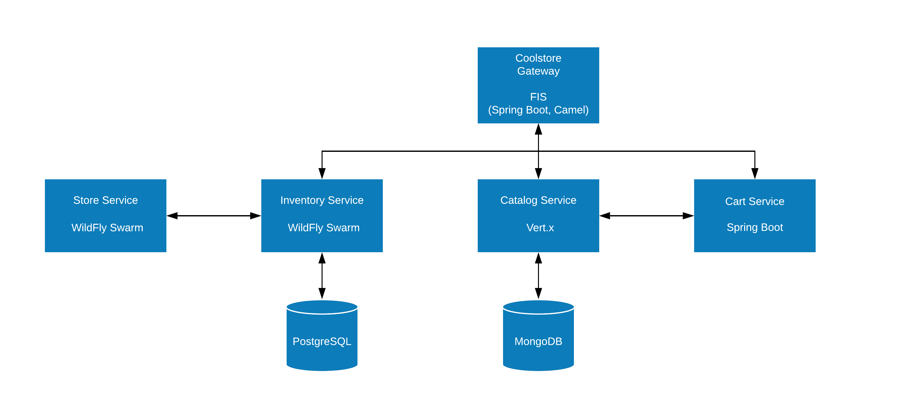

Lab Use Case and Setup
The use case for the labs in this course is an online retail webshop application called Coolstore. In this lab, you set up the environment required to develop and deploy the microservices that make up the application.
In subsequent labs, you will enhance the functionality of the microservices and add security, resilience, observability and more.
-
Set up the environment and deploy the microservices of the Coolstore application to OpenShift:
Coolstore Microservices Function in Coolstore Application Gateway
Entry-point for web-based and mobile clients of application
Inventory Service
Provides inventory information about products—including availability and location
Store Service
Provides information about location
Catalog Service
Provides information about products sold in web shop—including name, description, and price
Cart Service
Manages users' shopping carts and check-out procedure

1. Clone Source Code
Each microservice of the Coolstore application has his own git repository, The course instructor will provide you with the git URLs.
Start by cloning the different git repositories to your workstation. The instructions below are for students who use the lab VM. Students who use their own system must adapt the instructions as needed.
-
Open a terminal window and change to the
labfolder in the home directory:$ cd ~/lab -
Clone the Git repositories containing the lab source code:
$ git clone https://github.com/gpte-appmod-microservices-advanced/inventory-service.git $ git clone https://github.com/gpte-appmod-microservices-advanced/catalog-service.git $ git clone https://github.com/gpte-appmod-microservices-advanced/cart-service.git $ git clone https://github.com/gpte-appmod-microservices-advanced/store-service.git $ git clone https://github.com/gpte-appmod-microservices-advanced/gateway-service.git $ git clone https://github.com/gpte-appmod-microservices-advanced/ocp.git $ git clone https://github.com/gpte-appmod-microservices-advanced/soap-ui.git-
The first five git repositories contain the source code for the different microservice projects.
-
The
ocprepository contains OpenShift templates that will be used in the different labs of this course. -
The
soap-uiproject contains SoapUI projects that can be used to test and put load on the different services of the Coolstore application.
-
2. Import Source Code
In this section you import the source code projects into Red Hat Developer Studio.
-
Start Red Hat Developer Studio on your computer
-
In Red Hat Developer Studio, navigate to File → Import….
-
In the window that appears, select Maven → Existing Maven Projects.
-
Click Next.
-
In the next window of the wizard, navigate to the lab home folder.
-
The POM files of the different projects appear in the Projects window.
-
-
Select all of the POM files and click Finish.
-
The projects are imported into Red Hat Developer Studio.
-
-
Review the code of the different microservices.
3. Deploy the Coolstore microservices to OpenShift
|
Note
|
Your instructor will provide connection details for the classroom OpenShift environment. |
-
If you have not done so before, log in to OpenShift with the
occlient:$ export OCP_SERVER_URL=<<insert server url provided by instructor>> $ oc login --insecure-skip-tls-verify --server=${OCP_SERVER_URL} -
Create the OpenShift projects to which the application is to be deployed.
$ export OCP_USER_ID=<<insert user id provided by instructor>> $ oc new-project ${OCP_USER_ID}-coolstore && \ oc new-project ${OCP_USER_ID}-coolstore-infra-
Alternatively, you can create the projects through the OpenShift web console.
-
The different microservices will be deployed to the
coolstoreproject. Thecoolstore-infraproject will be used for utilities like Red Hat SSO, Hystrix Dashboard, Prometheus etc…
-
-
List your projects
$ oc projects You have access to the following projects and can switch between them with 'oc project <projectname>': userXX-coolstore * userXX-coolstore-infra Using project "userXX-coolstore-infra" on server "https://master.016b.openshift.opentlc.com:443". -
Change to the coolstore project
$ export COOLSTORE_PRJ=${OCP_USER_ID}-coolstore $ oc project $COOLSTORE_PRJ
3.1. Catalog Service
-
Deploy an instance of MongoDB on OpenShift using the
coolstore-catalog-mongodb-persistent.yamltemplate in theocp/catalog-servicedirectory in the lab home directory:$ oc process -f ocp/catalog-service/coolstore-catalog-mongodb-persistent.yaml \ -p CATALOG_DB_USERNAME=mongo \ -p CATALOG_DB_PASSWORD=mongo | oc create -f - -n $COOLSTORE_PRJ-
Note the use of a post-deployment lifecycle hook in the
coolstore-catalog-mongodb-persistent.yamltemplate to populate the MongoDB instance.
-
-
In a terminal, change directory to the root of the catalog service project.
$ cd ~/lab/catalog-service -
Create a ConfigMap with the configuration for the Coolstore catalog service application:
$ oc create configmap catalog-service --from-file=etc/app-config.yml -n $COOLSTORE_PRJ-
The
etcfolder of the application source project contains an example of a configuration file. -
The configuration file defines the
catalog.http.portparameter (port for the HTTP server) and theconnection_string,db_name,username, andpasswordMongoDB connection parameters, which are used by the Vert.x MongoDB client.
-
-
Add the
viewrole to the default service account:$ oc policy add-role-to-user view -z default -n $COOLSTORE_PRJ-
The Coolstore catalog service application calls the Kubernetes API to retrieve the ConfigMap, which requires
viewaccess.
-
-
Deploy the Coolstore catalog service application on OpenShift using the Fabric8 Maven plug-in:
$ mvn clean fabric8:deploy -Popenshift -Dfabric8.namespace=$COOLSTORE_PRJ -
Monitor the deployment of the catalog-service.
$ oc get pods -n $COOLSTORE_PRJ -w -
Wait until you see
READY 1/1forcatalog-mongodb-x-xyzandcatalog-service-x-xyz. Press<CTRL+C>once the services areRunning.NAME READY STATUS RESTARTS AGE catalog-mongodb-1-wjx7t 1/1 Running 0 4m catalog-service-1-6vnwx 1/1 Running 0 2m catalog-service-s2i-1-build 0/1 Completed 0 3m -
Test the Coolstore catalog service.
-
Retrieve the URL of the Coolstore catalog service application:
$ export CATALOG_URL=http://$(oc get route catalog-service -n $COOLSTORE_PRJ -o template --template='{{.spec.host}}') -
Retrieve an individual product from the catalog:
$ curl -X GET "$CATALOG_URL/product/444435"Sample Output{ "itemId" : "444435", "name" : "Oculus Rift", "desc" : "The world of gaming has also undergone some very unique and compelling tech advances in recent years. Virtual reality, the concept of complete immersion into a digital universe through a special headset, has been the white whale of gaming and digital technology ever since Nintendo marketed its Virtual Boy gaming system in 1995.", "price" : 106.0 }
-
3.2. Store Service
The store service is a very simple service - it does not use a database nor does it require configuration. It’s main purpose is to be able to demonstrate propagation of JWT security tokens and tracing spans between Wildfly Swarm applications.
-
In a terminal, change directory to the root of the store service project.
$ cd ~/lab/store-service -
Deploy the Coolstore store service application on OpenShift using the Fabric8 Maven plug-in:
$ mvn clean fabric8:deploy -Popenshift -Dfabric8.namespace=$COOLSTORE_PRJ -
Monitor the deployment of the store-service.
$ oc get pods -n $COOLSTORE_PRJ -w -
Wait until you see
READY 1/1forstore-service-x-xyz. Press<CTRL+C>once thestore-serviceisRunning.NAME READY STATUS RESTARTS AGE ... store-service-1-mc2zw 1/1 Running 0 55s store-service-s2i-1-build 0/1 Completed 0 1m
3.3. Inventory Service
-
Deploy an instance of PostgreSQL on OpenShift using the
inventory-service-postgresql-persistent.yamltemplate in theocp/inventory-servicedirectory in the lab home material:$ cd ~/lab $ oc process -f ocp/inventory-service/inventory-service-postgresql-persistent.yaml \ -p INVENTORY_DB_USERNAME=jboss \ -p INVENTORY_DB_PASSWORD=jboss \ -p INVENTORY_DB_NAME=inventorydb | oc create -f - -n $COOLSTORE_PRJ-
Note the use of a post-deployment lifecycle hook in the
inventory-service-postgresql-persistent.yamltemplate to populate the PostgreSQL instance.
-
-
In a terminal, change directory to the root of the inventory service project.
$ cd ~/lab/inventory-service -
Retrieve the URL of the store service
$ export STORE_URL=http://$(oc get route store-service -n $COOLSTORE_PRJ -o template --template='{{.spec.host}}') $ echo $STORE_URL -
Edit the file
etc/project-defaults.yml -
Move this entry at the end of the file
store: service: url: << update URL for store-service >> -
Be sure to update the URL for the store-service that you retrieved in the previous step
-
Create a ConfigMap with the configuration for the Coolstore inventory service application:
$ oc create configmap inventory-service --from-file=etc/project-defaults.yml -n $COOLSTORE_PRJ-
The
etcfolder of the application source project contains an example of a configuration file.
-
-
Seed the local Maven repository:
NoteBefore deploying the application, you need to seed the local Maven repository. This initial seeding normally takes a while, so be patient in the following steps. $ mvn clean package -DskipTests -
Deploy the Coolstore inventory service application on OpenShift using the Fabric8 Maven plug-in:
$ mvn clean fabric8:deploy -Popenshift -Dfabric8.namespace=$COOLSTORE_PRJ -DskipTests -
Monitor the deployment of the inventory-service.
$ oc get pods -n $COOLSTORE_PRJ -w -
Wait until you see
READY 1/1forinventory-service-x-xyz. Press<CTRL+C>once theinventory-serviceisRunning.NAME READY STATUS RESTARTS AGE ... inventory-service-6-54qx9 1/1 Running 0 3m inventory-service-s2i-1-build 0/1 Completed 0 2m -
Test the inventory service.
-
Retrieve the URL of the inventory service application:
$ export INVENTORY_URL=http://$(oc get route inventory-service -n $COOLSTORE_PRJ -o template --template='{{.spec.host}}') -
Retrieve the inventory for a product:
$ curl -X GET "$INVENTORY_URL/inventory/165613?storeStatus=true"Sample Output{ "itemId": "165613", "location": "Raleigh [CLOSED]", "quantity": 256, "link": "http://maps.google.com/?q=Raleigh" } -
The
storeStatus=truequery string tells the inventory service application to call the store service to obtain the status of the store. In this case, the status returned isCLOSED.
-
3.4. Cart Service
-
In a terminal, change directory to the root of the cart service project.
$ cd ~/lab/cart-service -
Retrieve the URL of the catalog service application:
$ echo $CATALOG_URL -
Create the ConfigMap with the configuration for the cart service application:
$ oc create configmap cart-service \ --from-literal=catalog.service.url=$CATALOG_URL \ -n $COOLSTORE_PRJ -
Deploy the Coolstore cart service application on OpenShift with the Fabric8 Maven plug-in:
$ mvn clean fabric8:deploy -Popenshift -Dfabric8.namespace=$COOLSTORE_PRJ -
Monitor the deployment of the cart-service.
$ oc get pods -n $COOLSTORE_PRJ -w -
Wait until you see
READY 1/1forcart-service-x-xyz. Press<CTRL+C>once thecart-serviceisRunning.NAME READY STATUS RESTARTS AGE ... cart-service-1-q2ghv 1/1 Running 0 1m cart-service-s2i-1-build 0/1 Completed 0 2m -
Test the cart service application:
-
Retrieve the URL of the Coolstore cart application:
$ export CART_URL=http://$(oc get route cart-service -n $COOLSTORE_PRJ -o template --template='{{.spec.host}}') -
Retrieve a shopping cart:
$ curl -X GET "$CART_URL/cart/mycart"Sample Output{ "id": "mycart", "cartItemTotal": 0, "shippingTotal": 0, "cartTotal": 0, "shoppingCartItemList": [] } -
Add an item to the cart:
$ curl -X POST "$CART_URL/cart/mycart/165614/2"Sample Output{ "id": "mycart", "cartItemTotal": 57.5, "shippingTotal": 6.99, "cartTotal": 64.49, "shoppingCartItemList": [ { "price": 28.75, "quantity": 2, "product": { "itemId": "165614", "name": "Ogio Caliber Polo", "desc": "Moisture-wicking 100% polyester. Rib-knit collar and cuffs; Ogio jacquard tape inside neck; bar- tacked three-button placket with Ogio dyed-to-match buttons; side vents; tagless; Ogio badge on left sleeve. Impo rt. Embroidery. Black.", "price": 28.75 } } ] } -
Remove an item from the cart:
$ curl -X DELETE "$CART_URL/cart/mycart/165614/1"Sample Output{ "id": "mycart", "cartItemTotal": 28.75, "shippingTotal": 4.99, "cartTotal": 33.74, "shoppingCartItemList": [ { "price": 28.75, "quantity": 1, "product": { "itemId": "165614", "name": "Ogio Caliber Polo", "desc": "Moisture-wicking 100% polyester. Rib-knit collar and cuffs; Ogio jacquard tape inside neck; bar- tacked three-button placket with Ogio dyed-to-match buttons; side vents; tagless; Ogio badge on left sleeve. Impo rt. Embroidery. Black.", "price": 28.75 } } ] } -
Check out the cart:
$ curl -X POST "$CART_URL/cart/checkout/mycart"Sample Output{ "id": "mycart", "cartItemTotal": 0, "shippingTotal": 0, "cartTotal": 0, "shoppingCartItemList": [] }
-
-
Congratulations, you successfully deployed the following services:
-
catalog-service
-
store-service
-
inventory-service
-
cart-service
-
4. Create new branches
The labs in the different modules of this course take the cloned source code material as starting point. For every module you can:
-
Make a new clone from the git repository
-
Or do every lab in its own branch.
For the second option, you would do something like:
-
Before the lab, create a new branch:
$ git checkout -b module2 -
At the end of the lab, commit your changes:
$ git add --all $ git commit -m "module2" -
Check out the master branch
$ git checkout master -
Repeat for the next module.
This is the end of the lab.